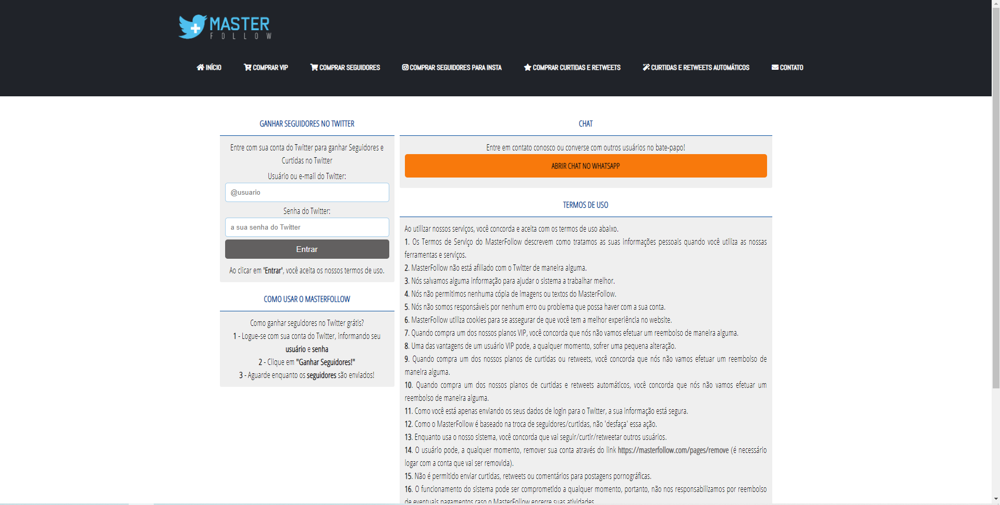
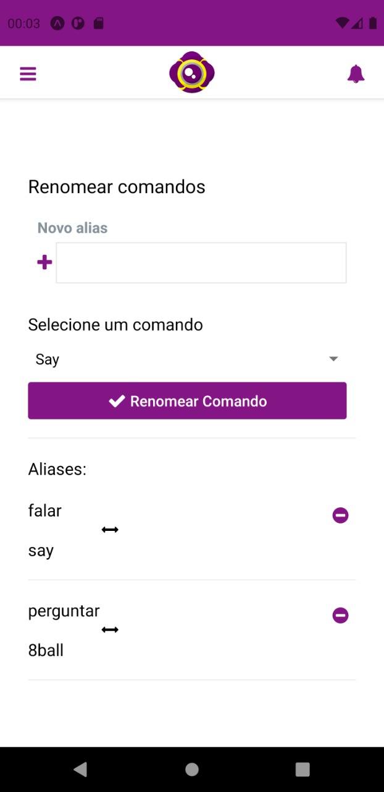
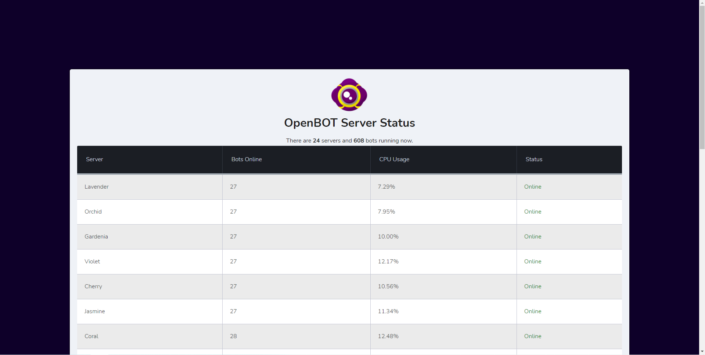
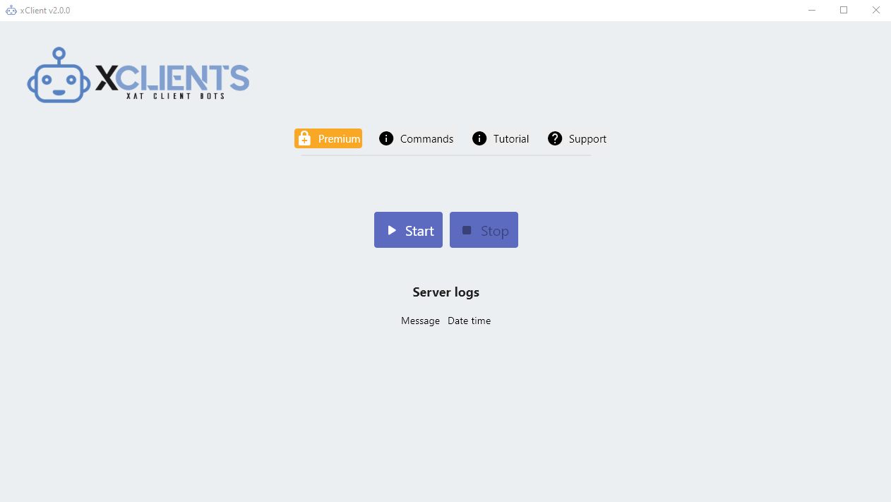
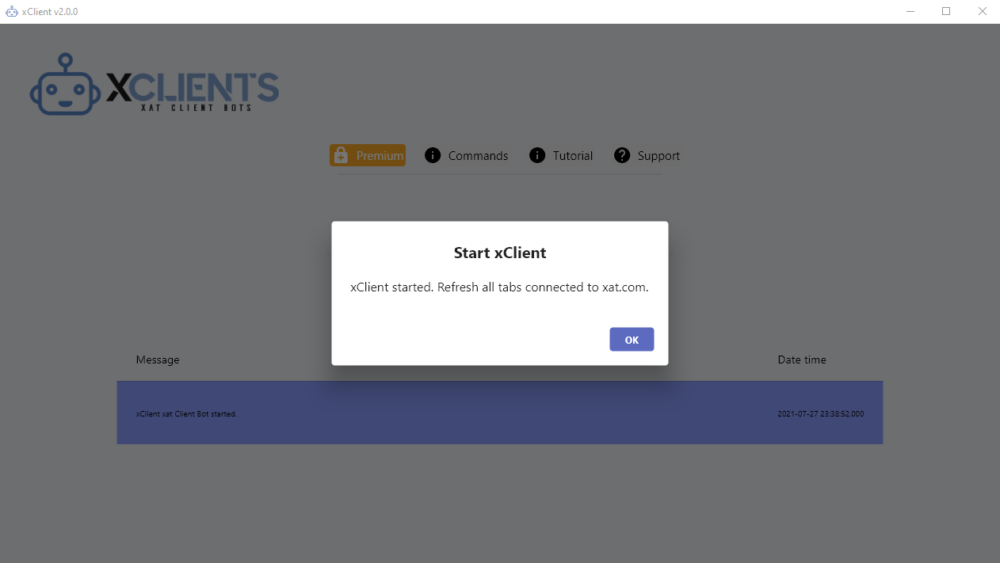
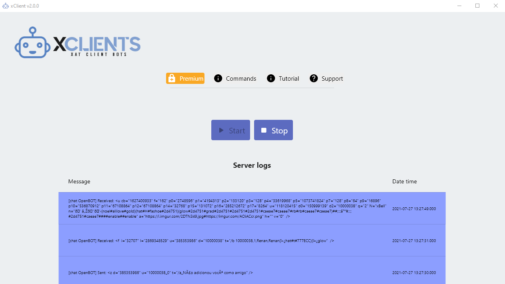
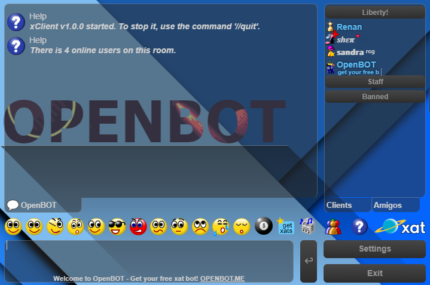

Olá, me chamo Renan Luis, sou um apaixonado por tecnologia, estudante de Engenharia de Software e tenho experiência majoritária na área de desenvolvimento web, com mais de 5 anos de experiência. Atualmente moro no Rio de Janeiro e tenho 20 anos de idade.
Confira abaixo alguns dos meus trabalhos:
MasterFollow
MasterFollow é um site para ganhar seguidores, curtidas e retweets no Twitter.
Mais informações: https://masterfollow.com
OpenBot – Aplicativo para Android
Aplicativo de administração da empresa OpenBot (serviço de bots para xat.com) que é possível ligar, desligar ou reiniciar o bot, assim como editar diversas informações.
OpenBot – Status dos Servidores
Página da empresa OpenBot (serviço de bots para xat.com) que é possível visualizar o status de todos os servidores, assim como o número de bots em execução e o uso de CPU.
xClient
Imagem 1: interface inicial.Imagem 2: serviço iniciado.
Imagem 3: interface após iniciado e pressionado o botão “OK”.
Imagem 4: demonstração do funcionamento do software.
xClient é um software de engenharia reversa (Windows) para um usuário de xat.com. O software basicamente torna o usuário um “bot”: é possível utilizar comandos como “//users” para receber a quantidade de usuários online na sala no momento (como demonstrado na Imagem 4).
Mais informações: https://xclients.net